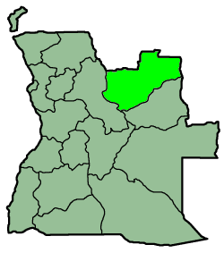
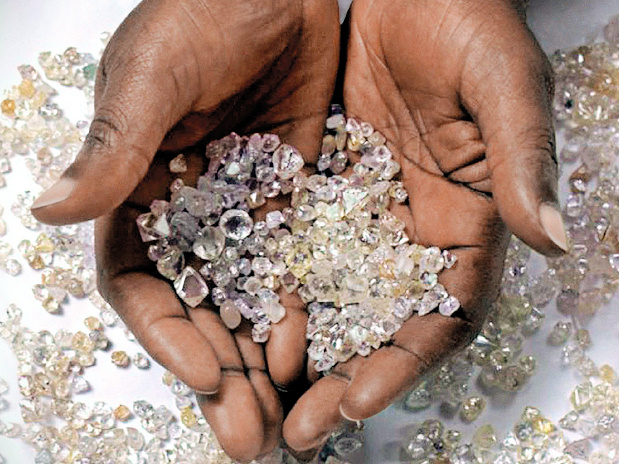

A província
A Lunda Norte é uma das 21 províncias de Angola, situada no nordeste do país. A sua capital é o Dundo, também conhecido como Dundo-Chitato. A província foi oficialmente criada a 4 de julho de 1978, pelo Decreto-Lei n.º 84/78, a partir da separação da Lunda Sul.
Faz fronteira a norte, leste e nordeste com a República Democrática do Congo, a sudeste e sul com a Lunda Sul e a oeste e sudoeste com a província de Malanje.
Governo provincial
Governadora: Filomena Elizabete Chitula Miza Aires, nomeada a 15 de julho de 2024.
Vice-governador para o setor político, social e económico: Faustino Alteres Teresa Malenga.
Vice-governador para os serviços técnicos e infraestruturas: Domingos Dala.
História
Por volta de 1590, o rei Muanta Gandi uniu a região leste de Angola, o norte do Cuando-Cubango e partes do atual Congo e da Zâmbia sob o reino Lunda. Esse Estado tornou-se, no século XVII, o Império Lunda, que mais tarde se fragmentou em estados confederados após disputas pelo trono.
Com a Conferência de Berlim, as potências coloniais dividiram definitivamente o território dos lundas. Nas terras da atual Lunda Norte formaram-se os antigos Estados de Capenda e de Muteba.
- 1590 — Unificação dos territórios lundas sob o rei Muanta Gandi.
- 1912 — Descoberta de diamantes no ribeiro Mussalala e início da exploração mineira no rio Chicapa.
- 1917 — A Diamang assume o acampamento de Dundo-Chitato, que se torna uma cidade operária.
- 1970 — A guerra atinge a região com a "Frente Leste" e a "Rota Agostinho Neto".
- 1978 — Criação oficial da província da Lunda Norte; capital provisória em Lucapa.
- 2000 — O Dundo é ratificado como capital definitiva da província.

Cultura e tradição
A população é maioritariamente cokwe (chócue), e a língua cokwe convive com o português. A região recebeu também refugiados da República Democrática do Congo, sobretudo das etnias lunda, bena-lulua e pende, o que fez da província um espaço de encontro de culturas.
As sonas são desenhos geométricos traçados na areia, feitos de pontos e de uma única linha contínua. Transmitidos oralmente de geração em geração, são património imaterial do povo cokwe. Toque na sona no topo da página para ler a descrição completa.
A gastronomia e os festivais culturais do Dundo, como o Centro Cultural do Dundo, mantêm viva a identidade local.


Geografia e clima
A província é atravessada por rios importantes, todos tributários do Cassai, um dos maiores afluentes da bacia do Congo: o Cassai, o Luachimo, o Cuango, o Chicapa, o Lui, o Cuílo e o Lóvua, entre outros.
O relevo é dominado pelo Planalto da Lunda, com altitudes médias de cerca de 900 metros. A paisagem alterna entre mosaico de floresta e savana, a norte e leste, e florestas de miombo, a oeste.
O clima predominante é o tropical de savana, com temperatura média de cerca de 27 ºC e chuvas que podem ser torrenciais. A precipitação média anual ronda os 1 400 mm.

Economia
A mineração é uma base importante da economia provincial, sobretudo a extração de diamantes e de ouro. Destacam-se as minas de Luó, Lucapa, Cachimo e Cambulo.
Na agricultura produzem-se arroz, mandioca, milho, amendoim, batata-doce e abacaxi. A pecuária é relevante, e os rios sustentam a pesca. No Dundo concentram-se o comércio, os serviços e a indústria de alimentos, bebidas e construção civil. Novos projetos procuram diversificar a economia da região.

Educação e extensão
A guerra destruiu grande parte das escolas e universidades da região. Ainda hoje há carência de salas e de professores qualificados, e o Governo procura reconstruir e expandir a rede de ensino.
A Escola Superior Pedagógica da Lunda-Norte, ligada à Universidade Lueji A'Nkonde, tem levado os sona às escolas e à comunidade através de aulas, palestras, oficinas e entrevistas. No Dundo funciona também o Instituto Médio Politécnico 28 de Agosto.